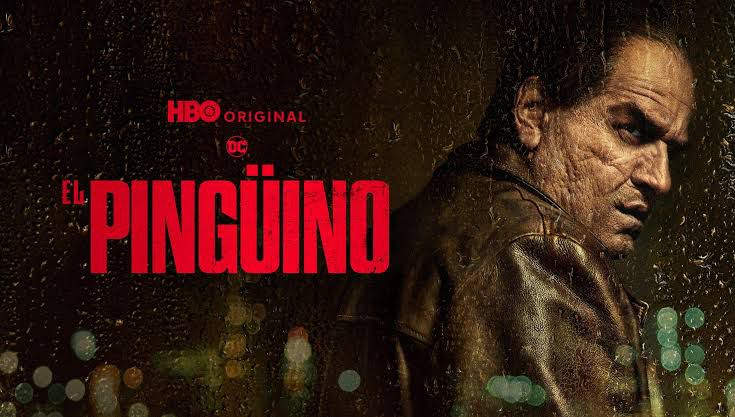
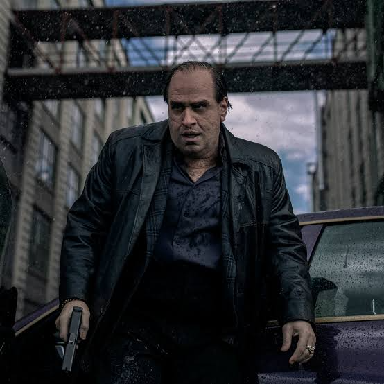
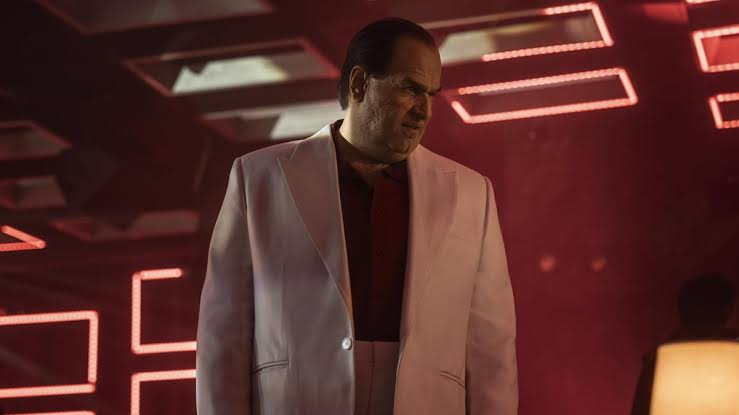
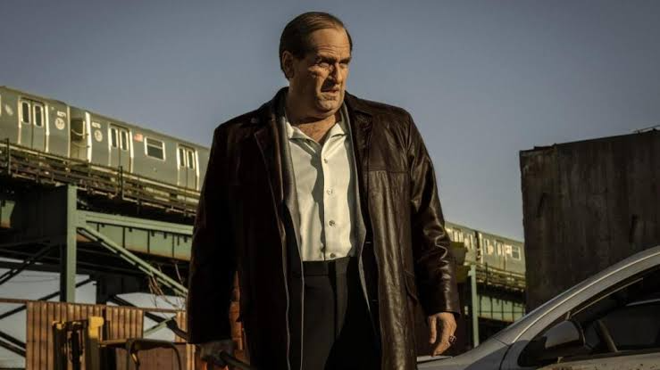

The Penguin continues Matt Reeves' saga in intriguing fashion
The final chapter of Matt Reeves' The Batman saga, The Penguin
What's so exciting about this series?
Why is it saving DC Comics?
The Penguin series starring Colin Farrell and Cristian Miloti is the latest chapter in Matt Reeves' The Batman saga that began with the film "The Batman" in March 2022, starring Robert Pattinson as the dark knight. The Penguin series has currently been keeping Max users, the streaming service that hosts the series, as constant viewers week after week, with this past Sunday, November 10, being the premiere of the last chapter of the series. Apart from that, it is worth remembering that Matt Reeves' The Batman universe is a universe that stands apart from the central universe that is being directed in this new stage by James Gunn (former Marvel employee) who is known for having directed Marvel Studios' Guardians of the Galaxy trilogy. And it is also worth remembering that the extended universe of DC Comics has already been forgotten. Currently, what people are most attracted to is this story of Robert Pattinson's Batman, people want to see the Dark Knight and Pattinson is the protagonist who wears the suit in this decade, the chosen one. That is why DC needs most right now to continue and dedicate as much as possible to the saga, but it is not excessive. Aside from all that, DC presented with The Penguin a great continuation of the saga, leaving Batman aside (who will shine on screen in The Batman II) and here we follow the path of Oswald Cobb, alias The Penguin, his career as he wants to become the most famous boss in Gotham, while overthrowing the most powerful and mafia families in Gotham, the Falcones and the Maronis.

What's next in the Matt Reeves saga?
First of all, the events of The Penguin started a week after the events of The Batman. And the end of The Penguin starts the beginning of The Batman II. Will we see the Penguin in The Batman II? Well, most likely yes, currently DC Comics is considering many cards they have on the table to find the next villain of the saga. There's been a lot of talk about Gian Carlo Esposito as Mr. Freeze (as Arnold Schwarzenegger was in Batman & Robin (1997)) and it's safe to say that the events of The Batman II will be set in winter. There are also villains like Clayface or Scarecrow (who we also saw with Cillian Murphy in Batman Begins (2005)). Apart from that, there are a whole host of villains that the Batman superhero contains. But including all of them, we must not forget that we have the new Joker of Barry Keoghan, who will surely appear in the final film of the saga and we must not forget that the Riddler is still alive. After all, speaking of The Penguin, it will be very exciting to see Oswald in the next Batman film, watching how Oswald after the events of The Penguin meets the Dark Knight again after a while.
